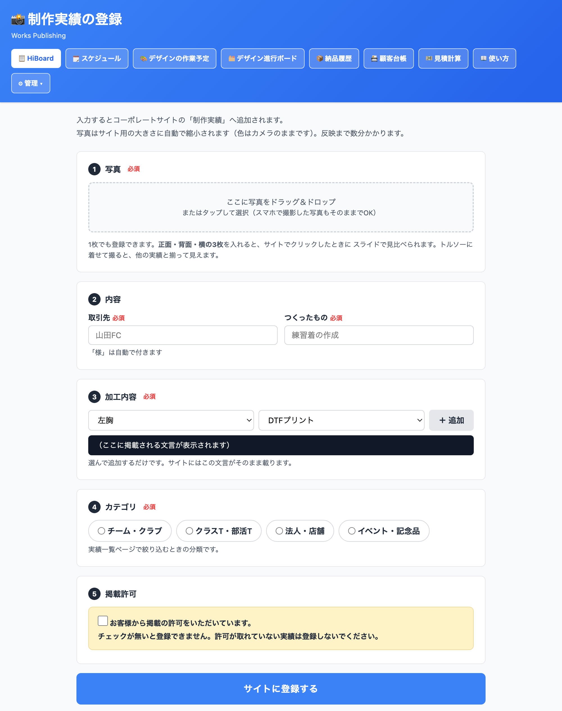

加工が仕上がった商品の写真を、会社のホームページ「制作実績」に載せる作業です。 HiBoardの画面に写真を入れて5つの項目を選ぶだけで、写真の縮小もページ作りも自動で行われます。1件あたり2〜3分で終わります。
| 項目 | 内容 |
|---|---|
| 使うパソコン | 社内LANにつながっているパソコン。いつもHiBoardを開いているアドレスから入ります。 お客様向けのアドレス（order.kubota-tunnel.com）からは開けません（「見つかりません」と出ます） |
| 写真の置き場所 | 久保田が共有ドライブに置きます（フォルダ名は都度お伝えします） |
| 写真の準備 | 小さくする必要はありません。カメラから出したままのサイズで大丈夫です （サイズ変更や明るさの調整をすると、かえって画質が落ちます） |
| お客様の許可 | 掲載の許可が取れているものだけを登録します（次ページ参照） |
HiBoardの画面上部にある を押して、 を選びます。

枠の中に写真をドラッグ＆ドロップするか、枠を押して選びます。
左の欄で位置、右の欄で加工方法を選び、＋ 追加 を押します。何か所でも足せます。
黒い帯に出てくる文章が、そのままホームページに載る文言です。ここを見て確認してください。
チーム・クラブ／クラスT・部活T／法人・店舗／イベント・記念品 から1つ。
実績一覧ページで絞り込むときの分類になります。
お客様から許可をいただいていることを確認して、チェックを入れます。チェックが無いと登録できません。
最後に サイトに登録する を押します。
画面に 「登録しました（写真◯枚）。数分後にサイトへ反映されます。」 と出れば、山本さんの作業は完了です。
| いつ | 何が起きているか |
|---|---|
| 押した直後 | 写真がホームページ用の大きさに自動で縮小されます。色や明るさは変えません |
| 数分後 | ホームページが自動で作り直され、公開されます |
反映されたかどうかは https://hiyoshi-1954.com/works/ で確認できます（ホームページのトップにも新しい順に6件出ます）。
| 画面に出るメッセージ | どうすればよいか |
|---|---|
| 写真を選んでください 取引先を入力してください 内容を入力してください カテゴリを選んでください | その欄がまだ空です。埋めてからもう一度押してください |
| 加工内容を1つ以上追加してください | ③で位置と加工方法を選んだあと、「＋ 追加」を押し忘れているときに出ます |
| 掲載許可の確認にチェックを入れてください | ⑤のチェックが入っていません |
| 写真は3枚までです | 3枚までに減らしてください。4枚目以降は別の実績として登録します |
| 写真1枚あたり60MBまでです | 通常のカメラ写真では出ません。出たときは久保田までご連絡ください |
| 画像ファイル（JPEG/PNG/WebP）を選んでください | 写真以外のファイル（PDFやZIPなど）を選んでいます |
| GitHubトークンが… リポジトリ…へ書き込めませんでした 画像処理ライブラリ(sharp)が… | 設定側の問題です。山本さんの操作では直りません。 画面に出た文章をそのまま久保田へお伝えください |
| （画面自体が開けない・「見つかりません」） | 社外向けのアドレスから開いています。社内LANのアドレスで開き直してください |
迷ったとき・エラーが出たとき・取り消したいときは久保田まで。「どのボタンで、どんな文字が出たか」をお伝えください。